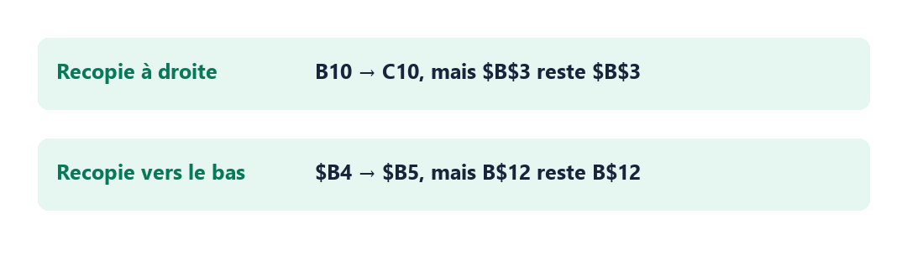

Comprendre le cours
1. Structurer un document que l’on pourra modifier
Un style donne le même rôle et la même mise en forme à plusieurs éléments. Pour un rapport, applique des styles de titres selon le niveau. Le sommaire automatique peut ensuite repérer les sections et leurs pages. Après une modification, actualise le sommaire et vérifie la version exportée.
Une tabulation définit un point d’alignement et son mode, par exemple à gauche ou à droite. Fixe les taquets dans la règle de l’éditeur. Utilise un tableau quand tu veux structurer plusieurs colonnes contenant des données régulières. Pour une liste de réponses, la mise en forme doit rester alignée quand un libellé s’allonge.
2. Construire une feuille autour des données d’entrée
Un tableur relie des cellules. Saisis une donnée une seule fois et réutilise-la dans les formules. Une cellule formatée en euros reste un nombre. Sépare le calcul, les unités et la présentation. Une référence relative comme B10 se déplace avec la copie. Avec $B$3, rien ne bouge. Dans B$12, seule la ligne est fixée ou, avec $B4, seule la colonne.

3. Résumer ou décider avec une formule
SOMME additionne. MOYENNE calcule une moyenne. MIN et MAX retrouvent les extrêmes. Pour rendre une note de patinage sans le résultat le plus haut et le plus bas, pars de la somme de toutes les notes, puis retire ces deux valeurs. Vérifie la ligne des notes avant la recopie.
Une formule SI choisit entre deux résultats. Écris d’abord la condition en français, par exemple « stock final strictement inférieur au seuil ». Pour un tableau de suivi, garde le seuil dans une seule cellule et teste un cas de chaque côté, plus le cas égal au seuil.
4. Vérifier une présentation et ses sources
Un graphique doit indiquer ce qu’il mesure et dans quelles unités. Pour comparer des quantités vendues par titre, utilise une représentation qui conserve les noms et dont les hauteurs sont comparables. Avant de partager un document collaboratif, vérifie quelle version est visible et qui peut l’éditer. Pour un rapport, associe une référence à chaque affirmation tirée d’un document et sépare la citation exacte de ta reformulation.
Pourquoi le prix du trajet bouge-t-il quand on recopie la formule ?
Dans le tableur du TD, le tarif commun est en B3. La formule =B10*$B$3 combine le nombre de trajets d’un élève avec ce tarif. Recopiée une colonne à droite, elle devient =C10*$B$3. Les deux signes dollar fixent la colonne et la ligne du tarif.
Avec quatre trajets à 3,50 €, vérifie d’abord 14 € pour la semaine puis 42 € pour un mois de trois semaines. Ces deux contrôles permettent de distinguer une référence mal copiée d’une erreur sur la durée.
Du cours aux TD et TP
Questions TD & TP
Tableur 1 · Calculer le transport scolaire d’un trimestre
Énoncé. À partir du prix d’un trajet, du nombre de trajets hebdomadaires et des semaines par mois, calculer le coût de chacun.
- Dans le fichier fourni, saisis
=B10*$B$3dans B12, puis recopie vers la droite. L’élève de la colonne B fait cinq trajets par semaine à 3,50 €, donc la semaine vaut 17,50 €. - Dans le classeur retrouvé, septembre est en ligne 14. En B14, écris
=B$12*$B4. Recopie vers la droite et vers les trois mois. Tu obtiens 70 €, 52,50 € et 70 € pour la première colonne. - En ligne 18, somme les trois mois. Le premier total vaut 192,50 €. Modifie temporairement le prix du trajet dans une copie et vérifie que toute la feuille se recalcule.
Tableur 5 · Vérifier stock, prix TTC et seuil
Énoncé. Calculer le nombre de BD vendues, le montant TTC et le déclenchement de la commande.
- Pour Spirou en ligne 3, saisis
=B3-C3en E3. Cela donne125−26=99. En F3, écris=E3*D3*(1+$B$9), où B9 contient la TVA. Résultat 594 €. - Ajoute un paramètre de seuil de 30 dans une cellule dédiée, par exemple B10. En G3, une formule possible est
=SI(C3<$B$10;"À commander";"OK"). Recopie ensuite vers les autres lignes. - Spirou et Astérix passent sous le seuil. Tintin et Gaston restent au-dessus. Pour vérifier la règle, modifie une quantité finale à 30. Avec l’opérateur strict, la cellule indique OK.
Texteur · Aligner le questionnaire avec des tabulations
Énoncé. Reproduire la mise en page du questionnaire « ABC caractères » du support.
- Repère l’alignement demandé pour les libellés et les réponses. Pose les taquets depuis la règle avec le mode d’alignement correspondant.
- Entre les lignes dans des paragraphes portant ces réglages. Utilise la touche de tabulation pour passer de repère en repère.
- Exporte en PDF, puis vérifie que les alignements restent corrects lorsque tu agrandis un libellé dans le fichier modifiable.